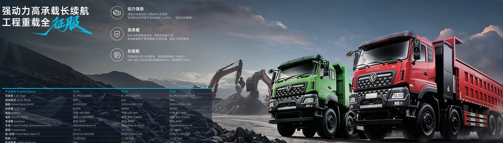

A shared depot where many operators charge the same electric truck fleet turns into a queue problem the moment two shifts overlap. Smart EV truck charging queue management with staggered shifts and charger booking keeps every unit moving instead of waiting in line for a plug.
When ten fleets share one yard, each wants to charge overnight, and the 120 to 360 kW chargers become the scarce resource. A Dongfeng electric truck takes 60 to 90 minutes for a 20 to 80 percent DC fast charge, so a single charger serves only about 16 sessions in a 24-hour day. Without scheduling, trucks idle for hours, drivers lose patience, and the depot owner fields complaints. The fix is not more chargers alone but better orchestration of the chargers you have.
The bottleneck is also a power problem. A site has a fixed grid connection, and if every truck demands 360 kW at midnight the site breaker trips. Good queue management is therefore two problems solved together: who gets the plug, and how much power each plug is allowed to draw at any moment. Solve only one and you still have stranded trucks or tripped feeders.
Split the depot into waves so charging demand is flat rather than spiked:
A simple booking board prevents the campfire queue. Assign each truck a slot by licence plate, and release the slot the moment the session passes 80 percent, because the slow tail from 80 to 100 percent wastes a plug. The TE8L and other 400 kWh tractors benefit most, since their larger packs would otherwise hog a charger for the full window.
Put teeth in the rules. A truck that overstays its slot without a fault should forfeit priority the next night, because a shared depot runs on social agreement as much as on hardware. The operators who thrive in shared yards are the ones who publish the rules, enforce them fairly, and give every fleet a visible view of charger status on a screen at the gate.
The table shows how a fixed site power budget splits across chargers when managed versus unmanaged. Dynamic sharing makes the same wires serve more trucks.
| Site power | Unmanaged chargers | Managed share per plug | Vehicles served per day |
|---|---|---|---|
| 500 kW | 4 at 120 kW each | Up to 125 kW dynamic | 48 |
| 1 MW | 8 at 120 kW each | Up to 250 kW dynamic | 96 |
| 1.5 MW | 12 at 120 kW each | Up to 360 kW dynamic | 144 |
The TE8L electric tractor carries a 400 kWh CATL LFP pack and is the workhorse of regional haulage, where it returns to a shared depot between long loops. Its 282 to 510 kW LvKong motor and 1.1 to 1.6 kWh per km consumption mean a midday top-up at a swap station, 5 to 6 minutes, often beats queuing for a plug. The Jordan electric truck market uses exactly this model at Aqaba logistics zones where land and power are constrained.
In a shared yard the TE8L should be the first candidate for a swap rather than a plug, because its 400 kWh pack would otherwise occupy a charger for the full 90-minute window and starve smaller trucks. Pairing one swap rig with a smaller DC charger fleet is frequently the lowest-cost way to serve a mixed depot, since the big tractors leave on fresh packs while the cargo trucks trickle-charge on the plugs.
Depot management software should do three things automatically:
Battery swap collapses the queue entirely. With a 5 to 6 minute swap of the 262 to 424 kWh pack, a truck is never parked waiting for electrons, it is in and out while another pack charges on the rack. For shared depots with erratic schedules, swap plus a smaller DC charger fleet is often cheaper than building charger capacity for the peak.
Swap does demand standardisation. Every truck in the swap pool must accept the same pack geometry and connector, so plan the depot as a single model family or confirm cross-model pack compatibility before you commit. Dongfeng's modular LFP packs make this practical within a model range, and a depot that standardises early avoids the worst of the queue problem completely.
Track two numbers weekly: average minutes a truck waits for a plug, and charger utilisation. If wait time climbs above 30 minutes, either add a 360 kW unit or tighten the booking rules. A Jordan depot running this discipline reported charger utilisation above 90 percent without driver complaints, because no one waited past their booked slot. Publish the scoreboard, because visible metrics are what keep every operator honest about their own idle time.
Before you blame behaviour, check the maths. A depot with thirty trucks and three 120 kW chargers can only serve about forty-eight charge sessions a day at best, which is nowhere near enough for a fleet that wants every unit topped overnight. The rule of thumb is one charger per eight to ten trucks if all charge in a single window, or fewer chargers if you commit to staggered waves. Sizing from the duty cycle, not from the truck count, is what prevents the queue before it forms.
Add a swap rig before you add a fourth charger in many yards, because the 5 to 6 minute swap of a 262 to 424 kWh pack serves far more trucks per hour than any plug. A mixed strategy, a few DC chargers for overnight and one swap for intraday, often hits the same availability at lower capital than building charger capacity for the worst-case peak. Model both on the load table above before you spend, so the depot is right-sized rather than over-built.
Software only works if drivers trust it. Give every operator a simple app that shows the next free plug, their booked slot and a countdown, and make the gate screen visible to everyone in the yard. When drivers can see the system is fair, they stop queue-jumping and the booking rules enforce themselves. The Jordan depot that reached 90 percent utilisation did it with a basic screen and a strict, published policy, not with expensive hardware.
The payoff of good queue management is measured in idle minutes avoided, and those minutes are trucks that actually earn revenue instead of waiting in line. A shared depot that solves scheduling and power together typically recovers the cost of its booking software within the first quarter, simply by putting more vehicles on the road each day. Start with the waves, add the booking board, and let the data tighten the rules from there until wait times fall below the thirty-minute line.
Shaanxi Fenghan Trading Co., Ltd can spec a Dongfeng EV truck fleet with the right charger-to-truck ratio for a shared depot. Contact WhatsApp +86 153 1943 1311 or sales@fenghan-trade.com for a queue-ready fleet quote.
Ready to electrify your fleet? Contact Shaanxi Fenghan Trading — authorized Dongfeng EV truck exporter. WhatsApp: +86 153 1943 1311 | Email: sales@fenghan-trade.com | dongfengevtrucks.com
🌐 Our Network: Fenghan Trade (SAGMOTO/SHACMAN Truck Export) · SAGMOTO heavy duty diesel trucks